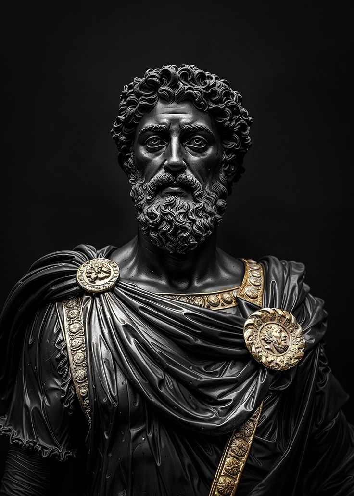

“Waste no more time arguing what a good man should be. Be one.” – Marcus Aurelius

We Are Not Civilized — We Are Trained
Civilization is a costume. Beneath it, we remain raw and reactive — animals taught to sit still. But the impulses are still there: rage, hunger, fear, desire. Do not reject them. Understand them. Mastery comes through integration, not denial.
Fear Is Not a Flaw
Fear is the smoke of the mind when truth is near. It's not weakness — it’s intelligence without direction. Most people don’t face fear. They obey it. The brave don’t erase fear. They read it like scripture.
The Ego Is a Story You Inherited
The self you protect is often not even you. It’s the voice of parents, culture, expectations. The ego is not evil. It’s just scared. When you observe it, not obey it — you start to remember who you were before the world told you who to be.
We Are Made of Conflict
Light and dark. Thought and instinct. Love and loneliness. Human nature is not about choosing sides — it’s about surviving the paradox. Strength comes not from purity, but from holding the tension and walking forward anyway.
You Are Nature
You are not separate from the forest, the sky, the dirt, or the howl. You are it — given memory, pain, language, and time. Nature doesn’t need your control. It needs your respect.